أمسية من الطرب الأصيل والموسيقى الشمالية المغربية، بقيادة المايسترا زكية يخلف.
رقم التواصل عبر واتساب يُعلن قريباً.
من روائع الشرق إلى كلاسيكيات المغرب وأنغام الشمال، يقدّم الكورال مختارات من الأغاني التي عرفها الجمهور وأحبّها.
أغانٍ خالدة من روائع الطرب العربي، بأصوات نسائية وتوزيع كورالي.
كشكول من روائع الأغنية المغربية العصرية التي تسكن ذاكرة كل بيت.
أنغام الشمال المغربي، من طنجة وجاراتها، بروحها وإيقاعاتها الخاصة.
موسيقية معروفة في طنجة، وصاحبة فكرة تأسيس كورال نساء تنجيس. جمعت حولها نساءً من مجالات مختلفة، بينهن محاميات وطبيبات ومهندسات وفاعلات جمعويات، يوحّدهن حبّ الموسيقى وهدف واحد: إحياء التراث الموسيقي لشمال المغرب وصونه من النسيان ونقله إلى الأجيال الصاعدة.
تقود الكورال على الخشبة وتشرف على اختيار البرنامج وتوزيعه، من الموشحات وروائع الطرب العربي إلى أنغام الشمال المغربي.
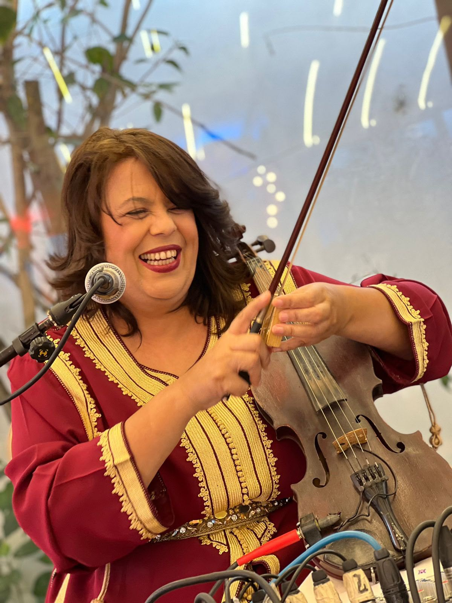
نساء من طنجة، من مهن ومجالات مختلفة، يجمعهن حبّ الطرب والتراث الموسيقي لشمال المغرب.
يرافق الكورال على الخشبة عازفون يمنحون الأصوات روحها الشرقية وإيقاعها المغربي.
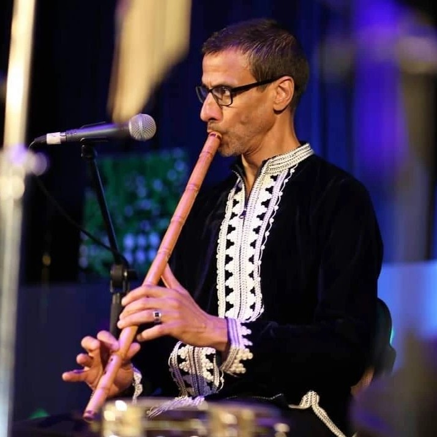
الناي نور الدين عشا @noureddine_acha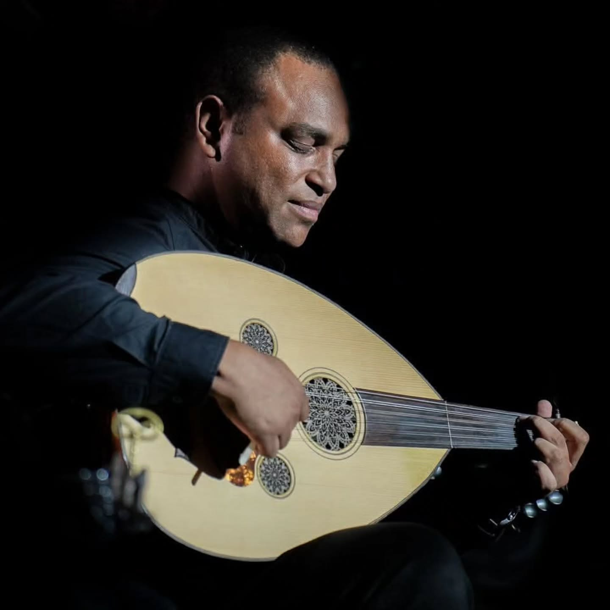
العود يونس فخار @younes_fakhar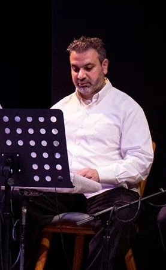
الإيقاع عبد الإله عشا @abdelilahacha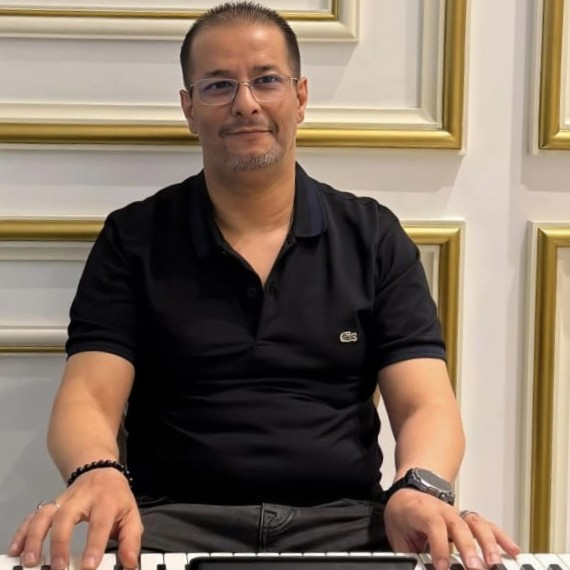
الأورغ زكرياء بنيس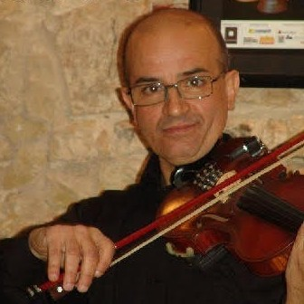
الكمان محمد البشير بن يحيى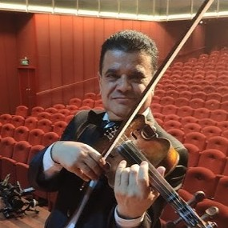
الكمان جمال الدين بن علالتحلّ فرقة Mujeres Mediterráneas ضيفةً على الأمسية قادمةً من غرناطة، لترافق كورال نساء تنجيس في بعض الأغاني. لقاءٌ بين ضفّتَي المتوسط، تلتقي فيه أنغام الفلامنكو بأصوات الشمال المغربي.
@mujeresmediterraneasصحافية مغربية بالقناة الثانية منذ سنة 2005، تدرّجت فيها من المراسلة الميدانية إلى رئاسة تحرير الأخبار. عرفها الجمهور ببورتريهات برنامج «ضيف الأحد»، حيث حاورت وجوهاً من عالم الفن والفكر والثقافة، قبل أن تجمع عدداً منها في كتابها «أثر». بصوتها وحسّها الثقافي، ترافقنا في هذه الأمسية وتقدّم فقراتها.
@souad_azaitraoui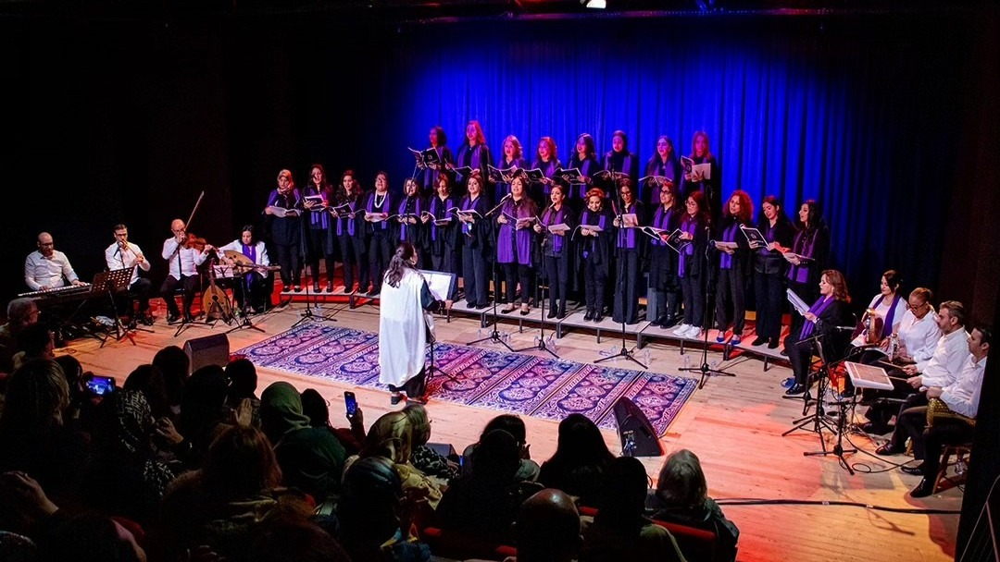
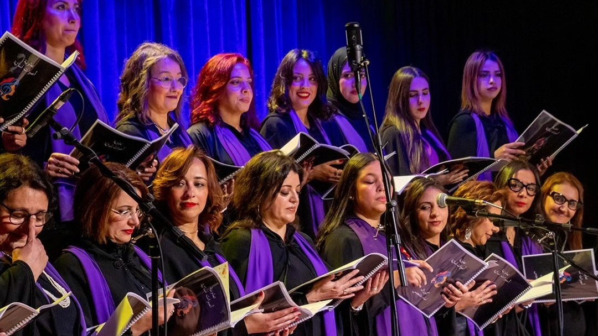
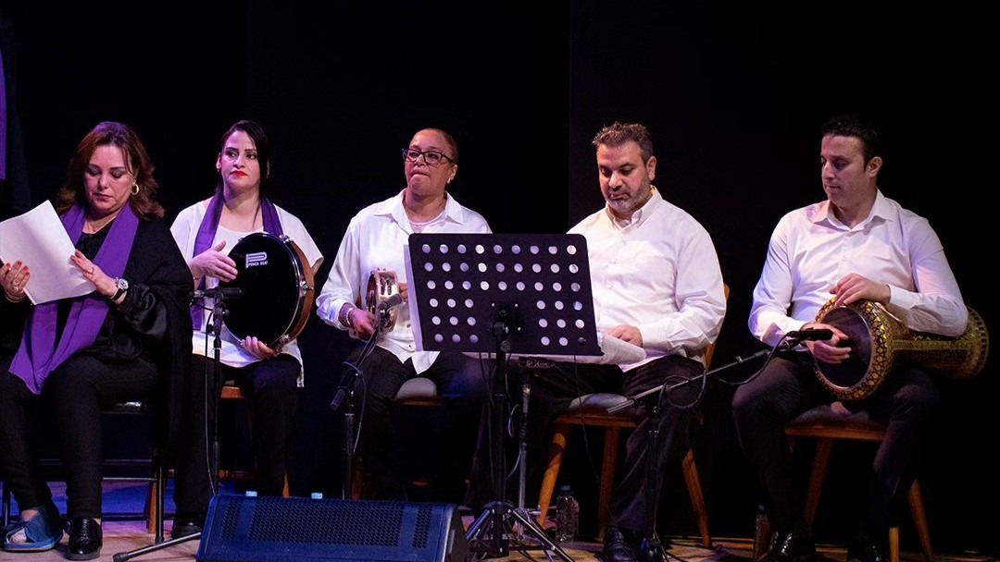
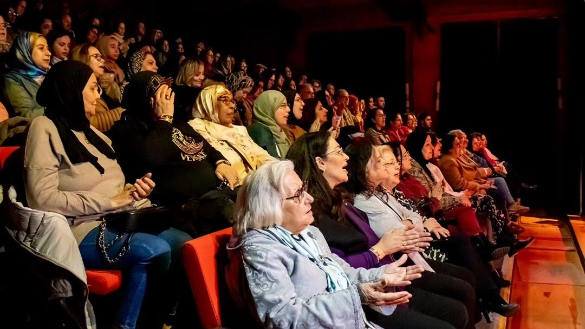
الحفل يوم السبت 12 دجنبر 2026. سنعلن ساعة البداية وموعد فتح الأبواب قريباً على هذه الصفحة.
في قصر الفنون والثقافة بطنجة. يمكنكم فتح الموقع على الخريطة من قسم المعلومات العملية أعلاه.
تفاصيل التذاكر والحجز ستُعلن قريباً. في الأثناء، يمكنكم التواصل معنا عبر واتساب لأي استفسار.
مختارات من ثلاثة ألوان موسيقية: الطرب الشرقي، والطرب المغربي، والتراث الشمالي المغربي.
احفظوا رابط هذه الصفحة، فكل المعلومات الجديدة ستُضاف إليها. ولا تنسوا مشاركتها مع العائلة والأصدقاء.